Creating an Anconda Environment amd Installing ArcGIS Python API:
-
This is the third tutorial in setting a Python development enviroment and tools in our system. You can find the previous parts here:
-
In this tutorial we will learn how to create an Anaconda virtual environment and install ArcGIS Python API inside it.
-
In Python, you can think of virtual environments as boxes where you will install each project dependencies inside it. This is the recommended way to create Python projects.
-
You can learn more about Python Virtual Environments in the Python Docs website.
-
There are many tools to create Python Virtual Environments like (there are other tools but these are some of the popular ones):
-
The built-in tool in Python called venv
-
And the one we are going to use in this tutorial Conda Environments
Steps
- Create Conda Environment using the GUI tool Anaconda Navigator.
- Activating the newly created conda environment using Anaconda Powershell Prompt.
- Install ArcGIS Python API using pip.
Create Conda Environment using the GUI tool Anaconda Navigator:
- First, open your start menu and search for Anaconda Navigator and open it:
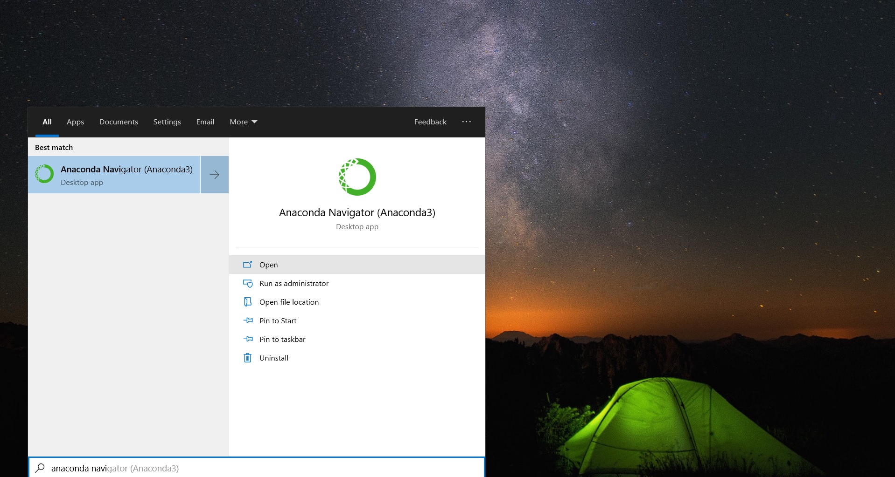
- The Anaconda Navigator window will open. Click on Environments to see the available conda environments:
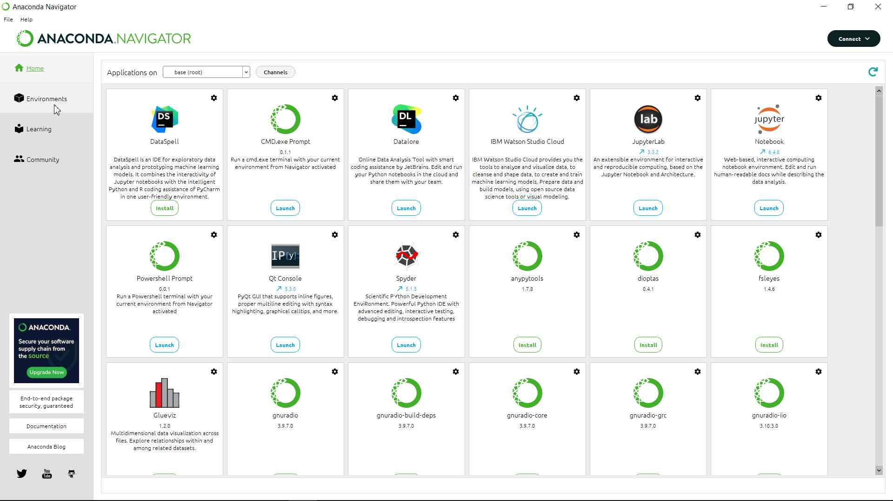
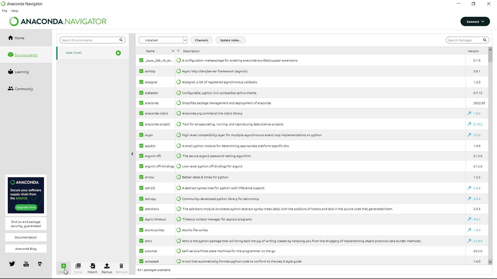
- At the bottom of the screen click on the Create button to add a new conda environment:
-
Choose a name for the environment and it will automatically choose Python Packages and Version.
-
Click on Create, then wait for the task to complete:
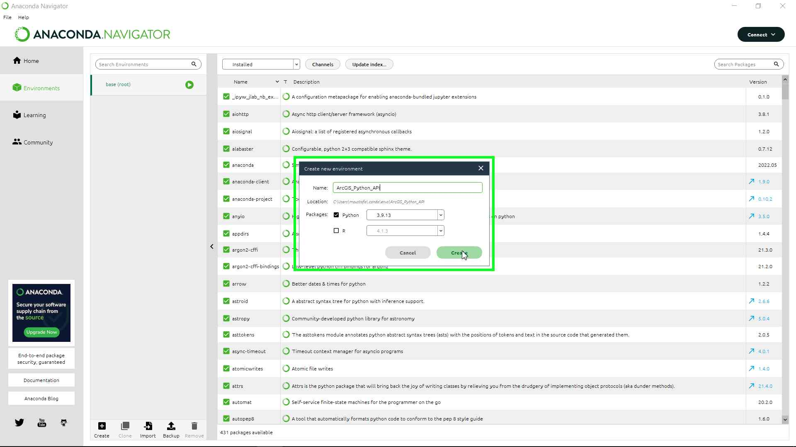
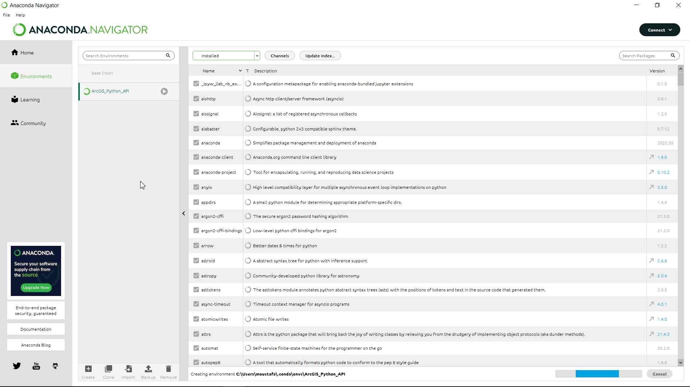
- You will see a new environment added to the list:
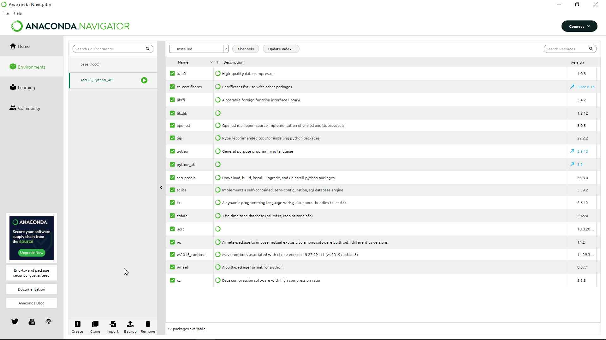
Activating the newly created conda environment using Anaconda Powershell Prompt:
-
Now that our conda environment is created, we need to activate it.
-
Open your start menu and search for Anaconda Powershell Prompt and open it:
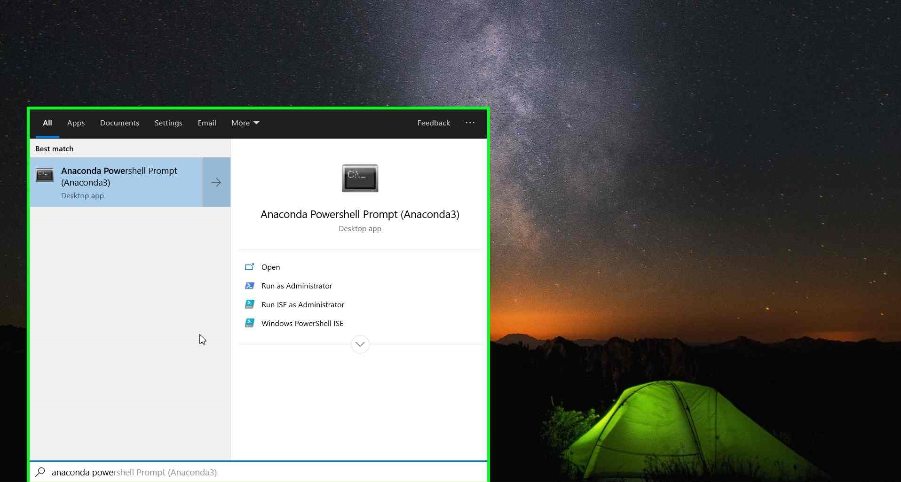
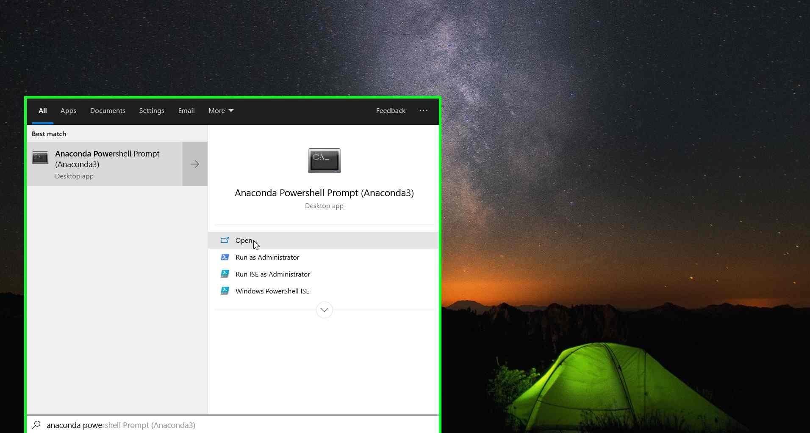
-
An Anaconda Powershell window will appear.
-
You will notice that the (base) conda environment is curruntly active. We do not want that. So type the following command and click Enter to activate the required env:
conda activate ArcGIS_Python_API
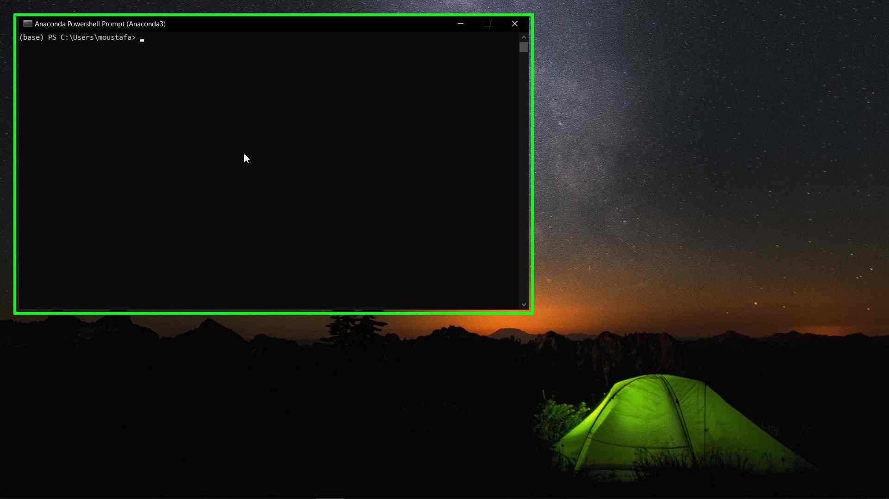
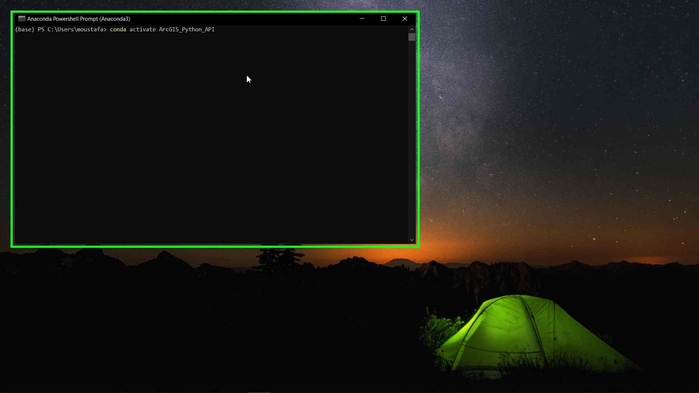
- Now you will see that the (ArcGIS_Python_API) environment is active:
- And we are ready for the final step.
Install ArcGIS Python API using pip:
-
After activating the required environment all we need is to type one single command which is:
pip install arcgis
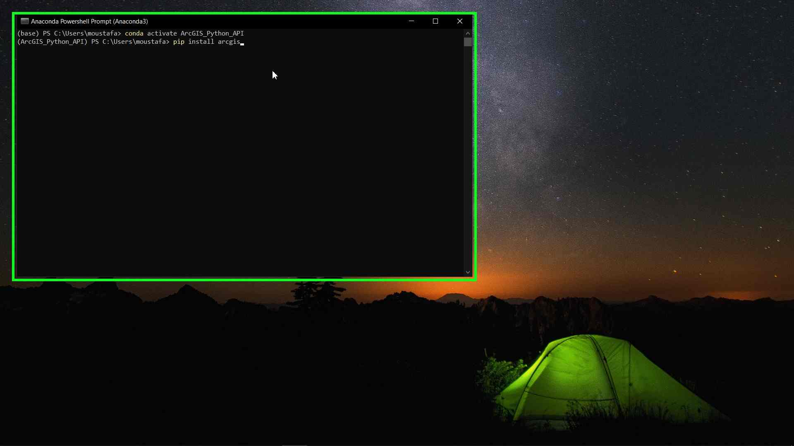
-
Wait until the command finish and make sure that there are no errors appears.
-
And that is it for our tutorial. In the next tutorial we will learn how to install Microsoft VS Code and add some of the recommended extensions to it.
-
You can find this tutorial here